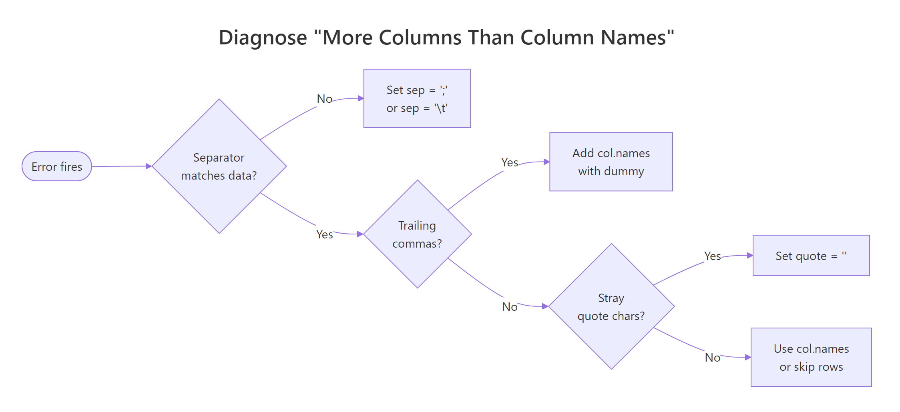

R read.csv Error: 'more columns than column names', 4 Common CSV Problems Fixed
Error in read.table(...) : more columns than column names means a data row in your CSV contains more fields than the header line declared. R stops rather than guess which values belong in which column, and four small file problems cause nearly every occurrence, each with a one-argument fix in read.csv().
What does "more columns than column names" actually mean?
The fastest way to understand this error is to trigger it, read the message R prints, then fix it with one argument. The error is not about missing data or corrupted bytes, it is about R counting more fields on a data row than on the header. The moment those two counts disagree, read.table() aborts. Once you know which of the four file problems caused the mismatch, the fix is a single argument change.
Let's reproduce the error on a tiny in-memory CSV where the header names two columns but one data row sneaks in a third value. We build the text with read.csv(text = ...) so every example in this post runs without touching a file on disk.
R compared length(header_fields) = 2 against length(row2_fields) = 3 and gave up. The fix is to tell R upfront that the file really has three columns by passing col.names, which overrides header detection:
We skipped the original header (skip = 1) and supplied three names ourselves. Row 1 now has NA for the unnamed third column, and row 2 parses cleanly. This single pattern, "tell R how many columns there really are", is the workhorse behind every fix in this post.
Try it: The CSV below has a header of 2 columns and one row with 3 fields. Fix the call so both rows parse without error, using col.names to supply a third name.
Click to reveal solution
Explanation: Skipping the original header and passing three col.names tells R the file has three columns from the start, so row 2's extra field lands in column z.
Cause #1: Why do trailing commas on data rows break the header?
Trailing commas are the most common culprit because spreadsheet exports often add them silently. If every data row ends with a stray , but the header does not, R counts one phantom column on each data row and aborts. The header has two names; the row has three fields, the last being empty.
R saw two header names and three fields per data row (the empty one after the last comma counts). The fix is to name the phantom column yourself, then drop it after reading:
We told R there are three columns, let it happily park the empty strings in trailing, then subset them away. The result is the clean two-column frame the file was meant to produce.
,, the export tool padded the sheet to a wider rectangle than the header. Open the raw file in a text editor before trusting the header, spreadsheets lie about what they save.Try it: The CSV below has trailing commas on every data row. Parse it into a clean 2-column data frame named ex2_df with columns product and price.
Click to reveal solution
Explanation: Naming the phantom column drop lets the file parse, and column subsetting removes it in one line.
Cause #2: What if your .csv isn't actually comma-delimited?
The second common cause is a file named something.csv that is not actually comma-delimited. European Excel exports use ; by default because commas are the decimal separator over there. Tab-separated exports are also common. When R tries to split on commas, a row like 1;Alice;NYC becomes one giant field, until another row sneaks in a stray comma inside a value, and suddenly that row has more fields than the header's one.
Row 2's embedded comma in Bob,Jr tripped R into thinking that row had two fields while the header had one, the classic mismatch in disguise. Switching the separator fixes everything in one argument:
R now splits on ;, sees three fields on every line, and the comma inside Bob,Jr is just data. read.csv2() is a shortcut for European-format files (semicolon separator, comma decimal) if your whole pipeline uses that format.
readLines(con, n = 2) on the file (or strsplit(bad_csv, "\n")[[1]][1:2] on in-memory text) and count the candidate delimiters. The character that appears the same number of times on line 1 and line 2 is almost always your separator.Try it: The CSV below is semicolon-delimited. Parse it into ex3_df with the correct sep argument.
Click to reveal solution
Explanation: sep = ";" tells R to split each line on semicolons; the field count now matches the header.
Cause #3: How do unclosed quotes merge rows into phantom columns?
The third cause is subtle and happens when a CSV contains stray quote characters. By default read.csv() treats " as a quoting character, so if one row opens a quote and never closes it, R keeps reading across newlines until it finds the next ". Two or three rows get glued into one logical row, the combined field count explodes, and you get the same error.
Row 2 has a bare " in the middle of broken"half, and R starts reading a quoted field there, gobbling up the rest of the string and the next line. The fastest fix when you don't control the file is to disable quoting entirely:
With quote = "", R treats every " as literal data, so the stray quote in row 2 is harmless and the field counts line up again. The downside is that legitimate quoted fields containing commas will split incorrectly, so only use this when the file has no commas inside quoted values.
" inside a quoted field is to write it as "", so She said "hi" becomes "She said ""hi""". Well-behaved exports follow this rule. If yours does not and you can re-export from the source, fix the exporter; quote = "" is a last resort when you cannot.Try it: The CSV below has a stray quote in row 2. Parse it into ex4_df using quote = "".
Click to reveal solution
Explanation: Setting quote = "" turns off quote-aware parsing, so stray " characters become ordinary data and no row bleeds into the next.
Cause #4: What if some rows genuinely have more fields than the header?
Sometimes the file is fine and the header is wrong. An analyst exports a table whose first column is unnamed (row IDs), or a script writes a few metadata rows above the actual header line. Either way, the data rows have one more field than the names R picks up.

Figure 1: Decision flow, which of the four causes is behind your "more columns than column names" error.
Here is a file with two junk metadata lines at the top, followed by a header that forgot to name the row-id column:
R read the first line as the header (# exported 2026-04-13, one field) and then hit data rows with three fields. Two fixes stack: skip the metadata rows, then provide explicit column names that include the missing id:
skip = 3 jumps past the two comment lines AND the broken header. header = FALSE plus col.names supplies the three names the file really needs. This is the general shape of every "header is wrong" fix, take control away from auto-detection and name the columns yourself.
Try it: The CSV below has one metadata line and a header missing the row-id. Parse it into ex5_df with columns id, fruit, and weight.
Click to reveal solution
Explanation: skip = 2 discards the comment and the broken header; passing all three col.names gives the id column its rightful name.
Practice Exercises
These capstone exercises combine techniques from multiple causes. Use distinct variable names (prefixed pe_) so they do not overwrite the tutorial state.
Exercise 1: Fix a file with trailing commas AND a wrong separator
The string below is semicolon-delimited AND has a trailing ; on every data row. Load it into pe1_df with two clean columns: city and population.
Click to reveal solution
Explanation: sep = ";" handles the delimiter; naming a third drop column absorbs the trailing-semicolon phantom field, which we then drop with column subsetting.
Exercise 2: Write a diagnose_csv() helper
Write a function diagnose_csv(text) that takes a CSV string, uses count.fields(textConnection(text), sep = ",") to count fields on each line, and prints which cause is most likely. Return "ok" if field counts all match; otherwise return a short string naming the suspected cause: "trailing-comma", "mismatched-rows", or "header-mismatch".
Test it on a file where every data row has exactly one extra field (trailing-comma pattern).
Click to reveal solution
Explanation: count.fields() returns the number of comma-separated fields per line without actually parsing the data. Comparing data-row counts to the header count points straight at the mismatch pattern.
Complete Example: Fix a real CSV export end-to-end
Here is a messy export that combines three of the four causes, metadata lines at the top, semicolon separator, AND a trailing ; on every data row. We will diagnose it step by step with readLines() and count.fields(), then stack the fixes into one clean read.csv() call.
Two comment lines, then a semicolon header, then data rows ending in ;. Now count fields on each line, first assuming commas (wrong), then semicolons:
Lines 1-2 have 1 field (comment lines with no ;). Line 3 has 3 fields (the true header). Lines 4-6 have 4 fields (three real values plus the trailing empty). The diagnosis is clear: skip 2 comment lines, use sep = ";", and name a fourth column to absorb the trailing field.
Three fixes, one call: sep for the delimiter, skip for the comment lines, and a drop column for the trailing semicolon. The result is the clean three-column data frame the warehouse export was supposed to produce.
Summary
Match the symptom to the cause, then use the exact argument in the right column:
| Cause | Symptom in the file | Fix |
|---|---|---|
| Trailing commas | Every data row ends in , |
col.names = c(..., "drop"), then subset |
| Wrong separator | File named .csv but uses ; or \t |
sep = ";" or sep = "\t" (or read.csv2()) |
| Unclosed quotes | Stray " glues rows together |
quote = "" |
| Extra columns / metadata | Header names fewer columns than data rows | skip = N + header = FALSE + col.names |
The universal fallback is header = FALSE, col.names = c(...), if you tell R how many columns the file has, the mismatch goes away regardless of which of the four problems caused it.
read.csv() up front how many columns there really are. Auto-detection is a convenience, not a contract.References
- R Core Team,
read.tabledocumentation. Link - R Core Team, An Introduction to R, Chapter 7: Reading data from files. Link
- R Core Team,
count.fieldsreference. Link - Statology, How to Fix in R: more columns than column names. Link
- ProgrammingR, How To Fix R Error more columns than column names. Link
- Statistics Globe, R Error in read.table: more columns than column names (3 Examples). Link
- Wickham, H. & Grolemund, G., R for Data Science, Chapter 7: Data import. Link
Continue Learning
- R Common Errors and Fixes, the master index of R error messages and their root-cause fixes.
- Importing Data in R, the full
read.csv/read.table/readrtour, with every argument explained. - R Error: cannot open the connection, the sister error for when R cannot even find the file, let alone parse it.